Chapter 28 Time Series Forecasting
Time series forecasting is a task that involves using a model to predict future values of a time series based on its past values. The data consists of sequences of values that are recorded at regular intervals over a period of time, such as daily stock prices or monthly weather data. Time series forecasting can be approached using a variety of machine learning techniques, including linear regression, decision trees, and neural networks.
One key difference between time series forecasting and other types of machine learning tasks is the presence of temporal dependencies in the data. In time series data, the value at a particular time point is often influenced by the values that came before it, which means that the order in which the data points are presented is important. This can make time series forecasting more challenging, as the model must take into account the relationships between past and future values in order to make accurate predictions.
One of the most accessible and comprehensive source on forecasting using R is “Forecasting: Principles and Practice” (https://otexts.com/fpp3/) by Rob J Hyndman and George Athanasopoulos (2021). The book now has the \(3^{rd}\) edition that uses the tsibble and fable packages rather than the forecast package. This brings a better integration to the tidyverse collection of packages. A move from FPP2 to FPP3 brings a move from forecast to fable. The main difference is that fable is designed for tsibble objects and forecast is designed for ts objects. There is a paper by Wang et al. (2020b), which is an excellent source for learning tsibble in more details.
In this section, we will use the tsibble and fable packages along with the fpp3 package and cover five main topics: applications with ARIMA models, grid search for ARIMA, time series embedding, forecasting with random forests, and artificial neural network applications, RNN and LSTM. The time-series analysis and forecasting is a very deep and complex subject, which is beyond the scope of this book to cover in detail. FPP3 is free and very accessible even for those without a strong background on time-series forecasting. Therefore, this section assumes that some major concepts, like stationarity, time series decomposition, and exponential smoothing, are already understood by further readings of FPP3.
28.1 ARIMA: A Statistical Model for Time Series Forecasting
The Autoregressive Integrated Moving Average (ARIMA) model is a fundamental statistical approach for time series forecasting. As a linear parametric model, ARIMA captures temporal dependencies such as seasonality and autocorrelation, making it useful for analyzing and predicting time-dependent data.
The model consists of three key components:
- Autoregressive (AR) Component: Captures relationships between the current value and its past values.
- Integrated (I) Component: Represents the degree of differencing applied to the data to achieve stationarity—where the mean, variance, and covariance remain constant over time.
- Moving Average (MA) Component: Models dependencies between the current and past forecast errors. The MA component of an ARIMA model is used to capture the short-term fluctuations in data that are not captured by the AR component. For example, if the time series data exhibits random noise or sudden spikes, the MA component can help to smooth out these fluctuations and improve the forecast accuracy.
An ARIMA model is expressed as ARIMA(p, d, q), where:
- p: Order of the autoregressive component (number of lagged values used).
- d: Degree of differencing needed to make the series stationary.
- q: Order of the moving average component (number of past errors included).
Selecting the optimal values for \(( p, d, )\) and \(( q )\) depends on the characteristics of the time series. Before applying ARIMA, the data must be preprocessed to remove trends and seasonality, ensuring stationarity. Once the model is fitted, it generates forecasts based on learned patterns.
The mathematical foundation of the ARIMA model is based on the concept of autoregressive (AR) and moving average (MA) processes. An autoregressive process is a type of stochastic process in which the current value of a time series depends on a linear combination of past values of the series. An autoregressive process can be represented mathematically as:
\[\begin{equation} X_{t} = c + \sum_{i=1}^{p}(\phi_{i} X_{t-i}) + \epsilon_{t}, \end{equation}\]
where \(X_{t}\) is the value of the time series at time \(t\), \(c\) is a constant, \(\phi_{i}\) is the autoregressive coefficient for lag \(i\), and \(\epsilon_{t}\) is white noise (a sequence of random variables with a mean of zero and a constant variance).
A moving average process is a type of stochastic process in which the current value of a time series depends on a linear combination of past errors or residuals (the difference between the actual value and the forecasted value). A moving average process can be represented mathematically as:
\[\begin{equation} X_{t} = c + \sum_{i=1}^{q}(\theta_{i} \epsilon_{t-i}) + \epsilon_{t}, \end{equation}\]
where \(\theta_{i}\) is the moving average coefficient for lag \(i\), and \(\epsilon_{t}\) is again white noise.
The ARIMA model, which is a combination of autoregressive and moving average processes, can be represented mathematically as:
\[\begin{equation} X_{t} = c + \sum_{i=1}^{p}(\phi_{i} X_{t-i}) + \sum_{i=1}^{q}(\theta_{i} \epsilon_{t-i}) + \epsilon_{t} \end{equation}\]
It is possible to write any stationary \(\operatorname{AR}(p)\) model as an MA(\(\infty\)) model by using repeated substitution. Here is the example for an \(\mathrm{AR}(1)\) model without a constant:
\[\begin{equation} \begin{aligned} X_{t} &= \phi_{1} X_{t-1} + \epsilon_{t} \quad \text{and} \quad X_{t-1} = \phi_{1} X_{t-2} + \epsilon_{t-1} \\ X_{t} &= \phi_1\left(\phi_1 X_{t-2} + \epsilon_{t-1}\right) + \epsilon_t \\ X_{t} &= \phi_1^2 X_{t-2} + \phi_1 \epsilon_{t-1} + \epsilon_t \\ X_{t} &= \phi_1^3 X_{t-3} + \phi_1^2 \epsilon_{t-2} + \phi_1 \epsilon_{t-1} + \epsilon_t \\ &\vdots \end{aligned} \end{equation}\]
With \(-1<\phi_1<1\), the value of \(\phi_1^k\) will get smaller as \(k\) gets bigger. Therefore, \(\mathrm{AR}(1)\) becomes an MA \((\infty)\) process:
\[\begin{equation} X_t=\epsilon_t+\phi_1 \epsilon_{t-1}+\phi_1^2 \epsilon_{t-2}+\phi_1^3 \epsilon_{t-3}+\cdots \end{equation}\]
The parameters of the ARIMA model (\(c\), \(\phi_{i}\), \(\theta_{i}\)) are estimated using maximum likelihood estimation (MLE), which involves finding the values of the parameters that maximize the likelihood of the observed data given the model. Once the model has been fit to the data, it can be used to make point forecasts (predictions for a specific time point) or interval forecasts (predictions with a range of possible values).
Some common methods for selecting p and q include in the ARIMA(p,d,q):
- Autocorrelation function (ACF) plot, which shows the correlations between the time series data and lagged versions of itself. A high positive autocorrelation at a lag of p suggests that p may be a good value for p in ARIMA(p,d,q).
- Partial autocorrelation function (PACF) plot, which shows the correlations between the time series data and lagged versions of itself, after accounting for the correlations at all lower lags. A high positive autocorrelation at a lag of q suggests the value for q in ARIMA(p,d,q).
- There are several statistical measures that can be used to compare the goodness of fit of different ARIMA models, such as Akaike’s Information Criterion (AIC) and the Bayesian Information Criterion (BIC). These measures can be used to select the model with the lowest value, which is generally considered to be the best model.
It is important to note that determining the values of p and q is an iterative process, and we may need to try different values and evaluate the results in order to find the best fit for our data.
28.2 Hyndman-Khandakar algorithm
The Hyndman-Khandakar algorithm (Hyndman and Khandakar, 2008a) combines several steps for modeling (and estimation) of the ARIMA model: unit root tests, minimization of the AICc, and MLE to obtain an ARIMA model. The arguments to ARIMA() in the fable package provide for many variations for modeling ARIMA. The modeling procedure to a set of (non-seasonal) time series data for ARIMA is defined in FPP3 as follows:
- Plot the data to identify any outliers.
- If the data shows variation that increases or decreases with the level of the series, transform the data (Box-Cox transformation) to stabilize the variance.
- Check if the data are non-stationary. And, make them stationary, if they are not.
- Start with an ARIMA \((p, d, 0)\) or ARIMA \((0, d, q)\) depending of what ACF/PACF indicates.
- Try your chosen model(s), and use the AICc to search for a better model.
However, after step 5, the residuals from the chosen model are supposed to be white noise. Otherwise, the model has to be modified. Once the residuals look like white noise, the ARIMA model is ready for forecasting.
We will show all these steps by using the epidemic curve of COVID-19 in Toronto covering 266 days between the March \(1^{st}\) and the November \(21^{st}\) of 2020. An epidemic curve (or epi curve) is a visual display of the onset of illness among cases associated with an outbreak. The data contain the first wave and the first part of the second wave. It is from Ontario Data Catalogue98 sorted by Episode Date, which is the date when the first symptoms were started. Our data set also contains the mobility data is from Facebook, all_day_bing_tiles_visited_relative_change, which reflects positive or negative changes in movement relative to baseline.
28.3 TS Plots
Let’s first load the data and convert it to tsibble.
library(tsibble)
library(fpp3)
library(gridExtra)
#setwd("/Users/mutlu/Dropbox/MLCausalChapman/bookdown-crc-master")
load("dftoronto.RData")
day <- seq.Date(
from = as.Date("2020/03/01"),
to = as.Date("2020/11/21"),
by = 1
)
tdata <- tibble(Day = day,
mob = data$mob,
cases = data$cases)
toronto <- tdata %>%
as_tsibble(index = Day)
toronto## # A tsibble: 266 x 3 [1D]
## Day mob cases
## <date> <dbl> <dbl>
## 1 2020-03-01 -0.0172 4
## 2 2020-03-02 -0.0320 6
## 3 2020-03-03 -0.0119 10
## 4 2020-03-04 0.0186 7
## 5 2020-03-05 0.0223 7
## 6 2020-03-06 -0.00626 10
## 7 2020-03-07 0.0261 8
## 8 2020-03-08 0.0273 10
## 9 2020-03-09 -0.0158 18
## 10 2020-03-10 -0.0521 29
## # ℹ 256 more rowsNote the [1D] in the header indicating daily data. Dealing with daily and sub-daily data with ts class is not an easy process. The tsibble class handles such data with no problem. More details on tsibbles can be found at “Tidy time series data using tsibbles”99.
Although there are better plotting option cosmetically, we will stick to what fpp3 simply offers:
a <- toronto %>% autoplot(mob, col = 'steelblue') +
labs(
title = "Mobility Index",
subtitle = "Toronto 2020",
x = "Days",
y = "Index"
)
b <- toronto %>% autoplot(cases, col = 'tomato') +
labs(
title = "Covid-19 Cases",
subtitle = "Toronto 2020",
x = "Days",
y = "Cases"
)
require(gridExtra)
grid.arrange(b, a, ncol = 2)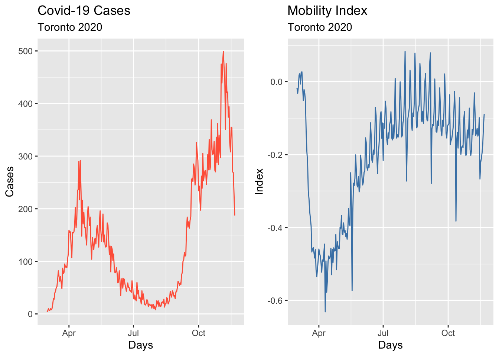
28.4 Box-Cox transformation
We would like to make the size of the variation about the same across the whole series. A proper variance-stabilizing transformation makes the forecasting model simpler and better. For example, Proietti and Lutkepohl (2012) find that the Box–Cox transformation produces forecasts which are significantly better than the untransformed data at the one-step-ahead horizon.
In time series analysis, stabilizing variance is crucial for building effective forecasting models. Many real-world time series exhibit heteroscedasticity, where the magnitude of fluctuations varies over time. This variability can make it challenging to model trends and seasonality accurately. A proper variance-stabilizing transformation helps simplify the modeling process, improves statistical properties, and enhances forecast accuracy.
One widely used transformation for this purpose is the Box-Cox transformation, introduced by George Box and David Cox (1964). This technique applies a power transformation to the data, making variance more uniform across the series and improving the assumptions required for many statistical and machine learning models.
For a given time series \(X_t\), the Box-Cox transformation is defined as:
\[ X_t^{(\lambda)} = \begin{cases} \frac{X_t^\lambda - 1}{\lambda}, & \lambda \neq 0 \\ \ln(X_t), & \lambda = 0 \end{cases} \]
where:
- \(X_t\) represents the original time series data.
- \(\lambda\) is the transformation parameter that determines the nature of the transformation.
- If \(\lambda = 1\), the data remains unchanged (no transformation).
- If \(\lambda = 0\), the transformation reduces to a natural logarithm, which is useful for handling exponential growth.
The optimal value of \(\lambda\) is typically estimated from the data using maximum likelihood estimation (MLE) to achieve the best variance stabilization and normality.
Why Use the Box-Cox Transformation?
- Stabilizing Variance: Many time series exhibit increasing variability over time. Applying Box-Cox reduces this heteroscedasticity, leading to better model performance.
- Improving Normality: Many forecasting models, including ARIMA, assume normally distributed residuals. Transforming the data can help meet this assumption.
- Enhancing Forecast Accuracy: Proietti and Lütkepohl (2012) found that forecasts based on Box-Cox-transformed data significantly outperform forecasts from untransformed data, particularly for short-term predictions (e.g., one-step-ahead forecasts).
- Linearizing Relationships: In cases where relationships between variables are nonlinear, applying Box-Cox can make them more linear, improving interpretability and the effectiveness of regression-based models.
Here are some common scenarios where the Box-Cox transformation is beneficial:
- When the time series exhibits a strong trend with increasing or decreasing variance.
- When residual diagnostics from an initial ARIMA model suggest non-constant variance (heteroscedasticity).
- When the distribution of the time series data is skewed or non-normal, affecting model assumptions.
- When using log transformations, but some values in the data are zero or negative (since log transformations are undefined for non-positive values).
lmbd <- toronto %>%
features(cases, features = guerrero) %>%
pull(lambda_guerrero)
toronto %>%
autoplot(box_cox(cases, lambda = lmbd), col = "tomato") +
labs(y = "",
title = latex2exp::TeX(paste0(
"Cases - Transformed with $\\lambda$ = ",
round(lmbd, 2)
)))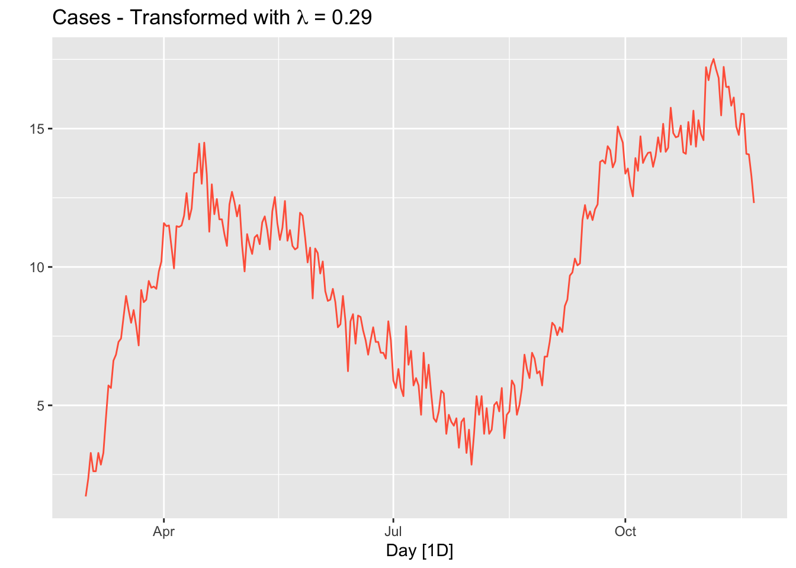
The option guerrero computes the optimal \(\lambda\) value for a Box-Cox transformation using the Guerrero method (Guerrero, 1993).
Note that, since the number of tests performed in a given day changes the numbers of cases, we should use “positivity rates”, which is the percentage of positive results in all COVID-19 tests given any day, instead of case numbers. We ignore this problem for now.
28.5 Stationarity
A time series is considered stationary if its statistical properties—mean, variance, and covariance—remain constant over time. This means that shifting the time axis does not alter the underlying distribution of the data. Stationarity is a fundamental assumption in many time series forecasting methods, as models built on non-stationary data may fail to generalize future trends and patterns effectively.
Many forecasting models, particularly ARIMA and other linear time series models, assume stationarity because they rely on past values to predict future ones. If the statistical properties of the data change over time, the model’s parameters may become unreliable, leading to poor forecast accuracy.
Non-stationary data often exhibit trends, seasonality, or time-dependent variance, which complicates forecasting by making historical patterns less meaningful for future predictions. Converting a time series to a stationary form improves model stability and predictive performance.
To determine whether a time series is stationary, analysts use statistical tests such as:
- Dickey-Fuller Test (ADF Test): This tests for the presence of a unit root, which indicates non-stationarity. A significant test result suggests that the series is stationary.
- Kwiatkowski-Phillips-Schmidt-Shin (KPSS) Test: This test checks for stationarity by examining whether the variance of the series changes over time. A significant result here suggests that the series is not stationary.
A combination of both tests can provide a clearer picture:
- If the ADF test suggests stationarity but the KPSS test does not, the series may still require differencing.
- If both tests indicate non-stationarity, the data must be transformed before modeling.
If a time series is found to be non-stationary, transformation techniques can be applied to stabilize it before modeling:
Differencing: The most common technique, differencing involves subtracting consecutive values in the series to remove trends.
- First-order differencing: \(Y_t' = Y_t - Y_{t-1}\) removes linear trends.
- Second-order differencing: \(Y_t'' = Y_t' - Y_{t-1}'\) removes quadratic trends.
- Seasonal differencing: Used when the data exhibits seasonal patterns.
- First-order differencing: \(Y_t' = Y_t - Y_{t-1}\) removes linear trends.
Logarithmic Transformation: Taking the natural logarithm of the data can stabilize variance, particularly in exponential growth patterns.
Box-Cox Transformation: A more flexible transformation that stabilizes variance while making the data more normally distributed.
Decomposition: Separating a time series into trend, seasonal, and residual components allows for targeted transformations.
Ensuring stationarity is a critical step in time series analysis and forecasting. By using statistical tests to diagnose stationarity and applying appropriate transformations like differencing or Box-Cox, analysts can enhance model reliability and improve forecasting accuracy. Whether working with financial markets, climate data, or economic indicators, stationarity remains a foundational concept for robust time series modeling.
Let’s first formally test all these series and see what we get:
## # A tibble: 1 × 0## # A tibble: 1 × 0# Formal KPSS test on the first difference
toronto %>%
mutate(diffcases = difference(cases)) %>%
features(diffcases, unitroot_kpss)## # A tibble: 1 × 0It seems that the first difference can make the cases series stationary. The null in this test suggests that the series are stationary, and the p-value indicates that the null is rejected. So, it seems that the test after first differencing gives us a green light! However, ACF’s are telling us that seasonal differencing would be needed:
level <- toronto %>% ACF(cases) %>%
autoplot() + labs(subtitle = "Covid-19 Cases")
fdiff <- toronto %>% ACF(difference(cases)) %>%
autoplot() + labs(subtitle = "First-difference")
diffbc <- toronto %>% ACF(difference(box_cox(cases, lmbd))) %>%
autoplot() + labs(subtitle = "First-difference Box-Cox")
ddiff <-
toronto %>% ACF(difference(difference(box_cox(cases, lmbd)))) %>%
autoplot() + labs(subtitle = "Double-difference Box-Cox")
require(gridExtra)
grid.arrange(level, fdiff, diffbc, ddiff, ncol = 2, nrow = 2)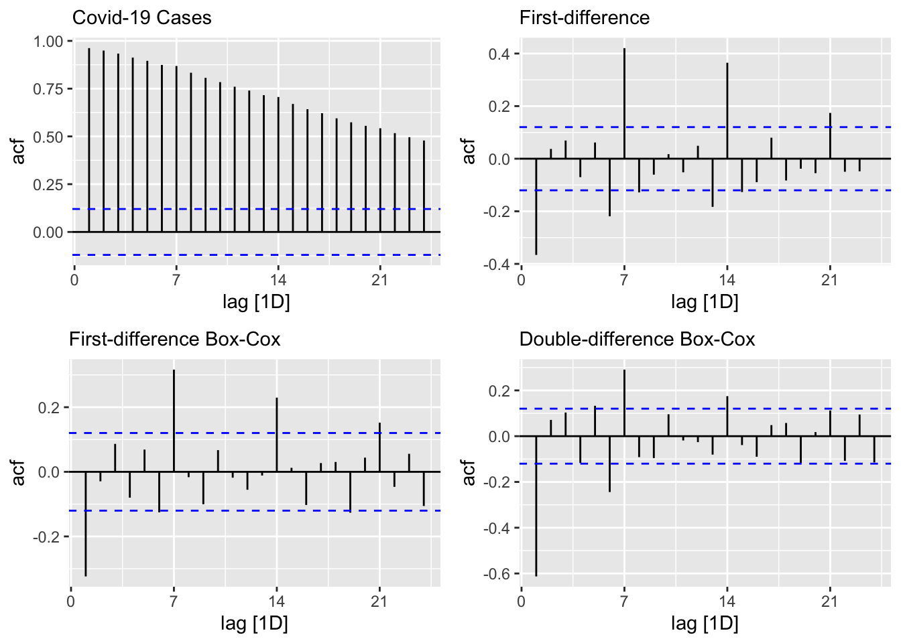
From ACF’s, there seems to be a weekly seasonal pattern at 7, 14, and 21, which are Sundays. We know that reported Covid-19 cases on Sundays tend to be lower than the rest of the week at least during the first wave.
We can also test if we need seasonal differencing:
## # A tibble: 1 × 1
## nsdiffs
## <int>
## 1 0## # A tibble: 1 × 1
## nsdiffs
## <int>
## 1 0The feature unitroot_nsdiffs returns 0 for both original and transformed series indicating no seasonal difference is required. We will stick to this “advice” because of two reasons. First, an unnecessary differencing would create more problems than a solution. Second, we can also modify ARIMA to incorporate seasonalllty in the data, which we will see shortly.
Yet, out of curiosity, let’s remove the “seemingly” weekly seasonality and see what happens to ACF’s. Since, the order of differencing is not important, we first applied the seasonal differencing then applied the first difference:
toronto %>%
gg_tsdisplay(difference(box_cox(cases, lmbd), 7) %>% difference(),
plot_type = 'partial',
lag = 36) +
labs(title = "Seasonal & first differenced", y = "")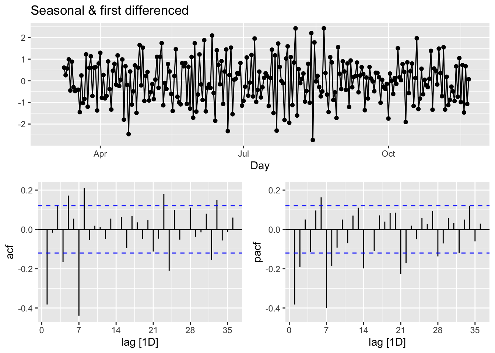
We can calculate the strength of the trend (T) and seasonality (S) in the time series, \(y_t=T_t+S_t+R_t\), by
\[ \begin{aligned} F_{Trend}=\max \left(0,1-\frac{\operatorname{Var}\left(R_t\right)}{\operatorname{Var}\left(T_t+R_t\right)}\right),\\ F_{Seasonality}=\max \left(0,1-\frac{\operatorname{Var}\left(R_t\right)}{\operatorname{Var}\left(S_t+R_t\right)}\right), \end{aligned} \]
where \(R_t\) is the remainder component:
## [,1]
## trend_strength 0.9843102
## seasonal_strength_week 0.5142436Relative to \(F_{Trend}\), the seasonality is not robust in the data. So, our decision is to go with a simple first-differencing with Box-Cox transformation. However, we will look at the final predictive performance if the transformation provides any benefit.
28.6 Modeling ARIMA
In his post, “Forecasting COVID-19”100, Rob J Hyndman makes the following comment in March 2020:
(…) the COVID-19 pandemic, it is easy to see why forecasting its effect is difficult. While we have a good understanding of how it works in terms of person-to-person infections, we have limited and misleading data. The current numbers of confirmed cases are known to be vastly underestimated due to the limited testing available. There are almost certainly many more cases of COVID-19 that have not been diagnosed than those that have. Also, the level of under-estimation varies enormously between countries. In a country like South Korea with a lot of testing, the numbers of confirmed cases are going to be closer to the numbers of actual cases than in the US where there has been much less testing. So we simply cannot easily model the spread of the pandemic using the data that is available.
The second problem is that the forecasts of COVID-19 can affect the thing we are trying to forecast because governments are reacting, some better than others. A simple model using the available data will be misleading unless it can incorporate the various steps being taken to slow transmission.
In summary, fitting simple models to the available data is pointless, misleading and dangerous.
With our selection of the data, we do not intent to create another debate on forecasting COVID-19. There are hundreds of different forecasting models currently operational in a hub, The COVID-19 Forecast Hub, that can be used live. We will start with an automated algorithm ARIMA() that will allow a seasonal parameters:
\[ \text { ARIMA }(p, d, q) \times(P, D, Q) S \]
The first term is the non-seasonal part of ARIMA with \(p=\) AR order, \(d=\) non-seasonal differencing, \(q=\) MA order. The secon term is seasonal part of the model with \(P=\) seasonal AR order, \(D=\) seasonal differencing, \(Q\) = seasonal MA order, and \(S=\) seasonal pattern, which defines the number of time periods until the pattern repeats again.
In our case, low values tend always to occur in some particular days, Sundays. Therefore, we may think that \(\mathrm{S}=7\) is the span of the periodic seasonal behavior in our data. We can think of a seasonal first order autoregressive model, AR(1), would use \(X_{t-7}\) to predict \(X_t\). Likewise, a seasonal second order autoregressive model would use \(X_{t-7}\) and \(X_{t-14}\) to predict \(X_t\). A seasonal first order MA(1) model would use \(\epsilon_{t-7}\) as a predictor. A seasonal second order MA(2) model would use \(\epsilon_{t-7}\) and \(\epsilon_{t-14}\).
Let’s use our data first-differenced and transformed:
toronto <- toronto %>%
mutate(boxcases = box_cox(cases, lambda = lmbd))
toronto %>%
gg_tsdisplay(difference(boxcases), plot_type='partial')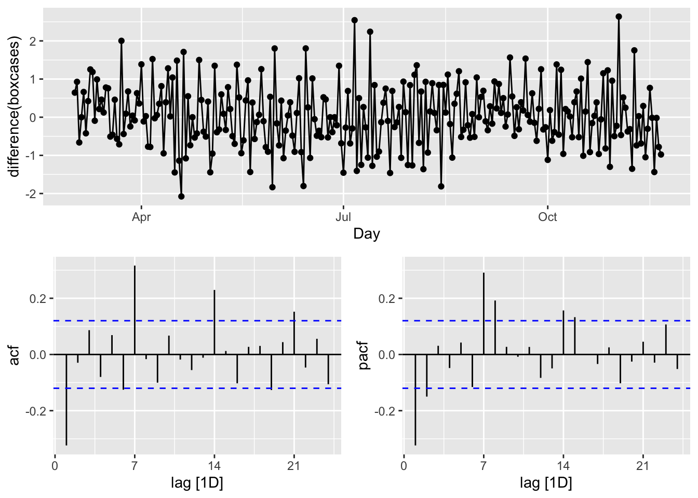
We look at the spikes and decays in ACF and PACF: a exponential decay in ACF is observed at seasonal spikes of 7, 14, and 21 as well as two spikes at 7 and 14 in PACF indicate seasonal AR(2). We will also add non-seasonal AR(2) due to 2 spikes in PACF at days 1 and 2. Here are our initial models:
\[ \operatorname{ARIMA}(2,1,0)(2,1,0)_{7}\\ \operatorname{ARIMA}(0,1,2)(0,1,3)_{7} \]
covfit <- toronto %>%
model(
AR2 = ARIMA(boxcases ~ pdq(2, 1, 0) + PDQ(3, 1, 0)),
MA3 = ARIMA(boxcases ~ pdq(0, 1, 2) + PDQ(0, 1, 3)),
auto = ARIMA(boxcases, stepwise = FALSE, approx = FALSE)
)
t(cbind(
"AR2" = covfit$AR2,
"MA3" = covfit$MA3,
"auto" = covfit$auto
))## [,1]
## AR2 ARIMA(2,1,0)(3,1,0)[7]
## MA3 ARIMA(0,1,2)(0,1,3)[7]
## auto NULL model## # A tibble: 2 × 6
## .model sigma2 log_lik AIC AICc BIC
## <chr> <dbl> <dbl> <dbl> <dbl> <dbl>
## 1 MA3 0.468 -277. 567. 567. 588.
## 2 AR2 0.534 -285. 582. 583. 604.## Series: boxcases
## Model: ARIMA(0,1,2)(0,1,3)[7]
##
## Coefficients:
## ma1 ma2 sma1 sma2 sma3
## -0.4340 0.1330 -0.8617 -0.0573 -0.0809
## s.e. 0.0648 0.0612 0.0827 0.0733 0.0600
##
## sigma^2 estimated as 0.4684: log likelihood=-277.29
## AIC=566.58 AICc=566.92 BIC=587.9The ARIMA() function uses unitroot_nsdiffs() to determine \(D\) when it is not specified. Earlier, we run this function that suggested no seasonal differencing.
All other parameters are determined by minimizing the AICc (Akaike’s Information Criterion with a correction for finite sample sizes), which is similar to Akaike’s Information Criterion (AIC), but it includes a correction factor to account for the fact that the sample size may be small relative to the number of parameters in the model. This correction helps to reduce the bias in the AIC estimate and make it more accurate for small sample sizes. When the sample size is large, AIC and AICc are nearly equivalent and either one can be used.
Although AICc values across the models are not comparable (for “auto”, as it has no seasonal differencing), it seems that our manually constructed ARIMA, \(\operatorname{ARIMA}(0,1,2)(0,1,3)_{7}\) could also be an option. This brings the possibility of a grid search to our attention.
Before that, however, let’s check their residuals:
rbind(
augment(covfit) %>%
filter(.model == "auto") %>%
features(.innov, ljung_box, lag = 24, dof = 5),
augment(covfit) %>%
filter(.model == "MA3") %>%
features(.innov, ljung_box, lag = 24, dof = 5),
augment(covfit) %>%
filter(.model == "AR2") %>%
features(.innov, ljung_box, lag = 24, dof = 5)
)## # A tibble: 3 × 3
## .model lb_stat lb_pvalue
## <chr> <dbl> <dbl>
## 1 auto NA NA
## 2 MA3 27.3 0.0971
## 3 AR2 21.1 0.331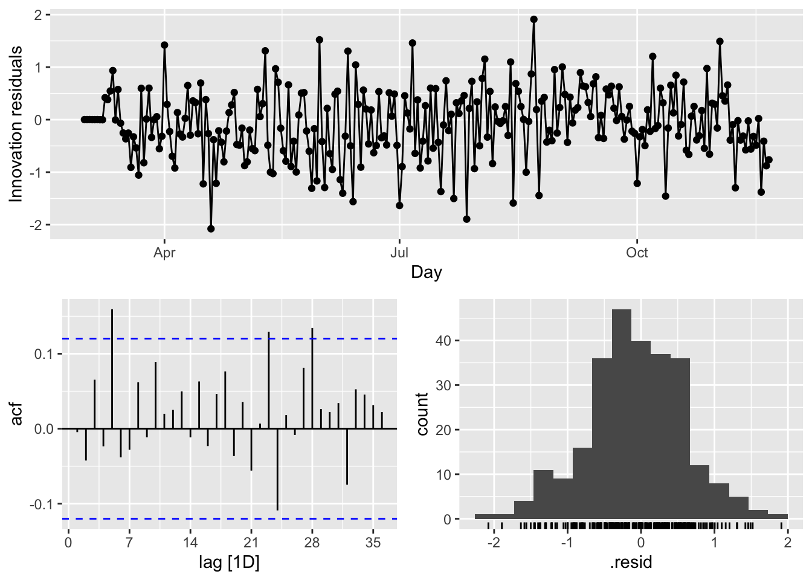
There are several significant spikes in the ACF. But, the model passes the Ljung-Box test at the 5 percent significance level.
Meanwhile, a model without white noise errors can still be used for forecasting, but the prediction intervals may not be accurate due to the correlated residuals. Sometimes, we cannot find a model that passes this test. In practice, we may have to look at the tradeoff between prediction accuracy and reliable confidence intervals. If the difference is too high, we may chose the best model with the highest prediction accuracy.
Before looking at a cross-validation approach for model selection in ARIMA modeling, let use our model to predict a week ahead (2020-11-22 to 2020-11-28):
## # A fable: 21 x 4 [1D]
## # Key: .model [3]
## .model Day boxcases .mean
## <chr> <date> <dist> <dbl>
## 1 AR2 2020-11-22 N(12, 0.53) 12.1
## 2 AR2 2020-11-23 N(13, 0.68) 13.3
## 3 AR2 2020-11-24 N(13, 0.87) 12.8
## 4 AR2 2020-11-25 N(13, 1.1) 12.8
## 5 AR2 2020-11-26 N(12, 1.3) 12.2
## 6 AR2 2020-11-27 N(12, 1.5) 12.3
## 7 AR2 2020-11-28 N(12, 1.7) 11.5
## 8 MA3 2020-11-22 N(12, 0.48) 12.4
## 9 MA3 2020-11-23 N(13, 0.63) 13.2
## 10 MA3 2020-11-24 N(13, 0.87) 13.1
## # ℹ 11 more rowslibrary(gridExtra)
# Produce a 7-day ahead forecast once
fc <- covfit %>% forecast(h = 7)
# 1) Full forecast (no intervals)
fc %>%
autoplot(toronto, level = c()) +
xlab("Days") +
ylab("Transformed Cases with Box-Cox")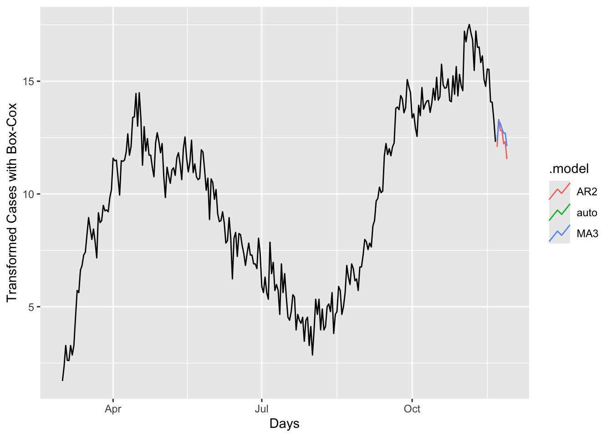
# 2) Individual‐model plots (no intervals, no legends)
a <- fc %>%
filter(.model == "auto") %>%
autoplot(toronto, level = c()) +
labs(title = "COVID-19 Forecasting – Auto",
y = "Box-Cox Transformed Cases") +
theme(legend.position = "none")
b <- fc %>%
filter(.model == "MA3") %>%
autoplot(toronto, level = c()) +
labs(title = "COVID-19 Forecasting – MA3",
y = "Box-Cox Transformed Cases") +
theme(legend.position = "none")
# Arrange side-by-side
grid.arrange(a, b, ncol = 2)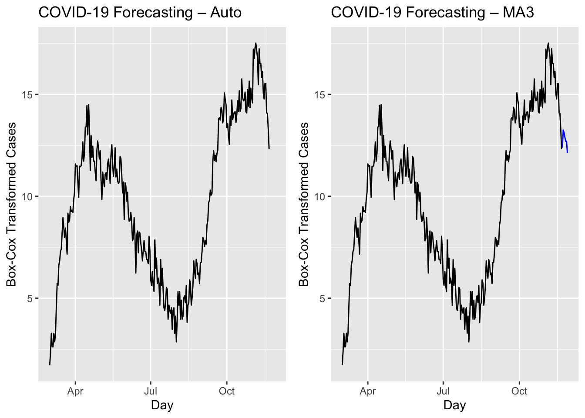
We have predicted values for coming 7 days but we do not have realized values. Hence, we cannot compare these models in terms of their accuracy. We can look at the forecast accuracy of these models by using a training set containing all data up to 2020-11-14. When we forecast the remaining seven days in the data, we can calculate the prediction accuracy.
train <- toronto %>%
filter_index( ~ "2020-11-14")
fit <- train %>%
model(
AR2 = ARIMA(boxcases ~ pdq(2, 1, 0) + PDQ(3, 1, 0)),
MA3 = ARIMA(boxcases ~ pdq(0, 1, 2) + PDQ(0, 1, 3)),
auto = ARIMA(boxcases, stepwise = FALSE, approx = FALSE)
) %>%
mutate(mixed = (auto + AR2 + MA3) / 3)Although mixing several different ARIMA models does not make sense, we can have an ensemble forecast mixing several different time series models in addition ARIMA modeling. A nice discussion can be found in this post at Stackoverflow.
And, now the accuracy measures:
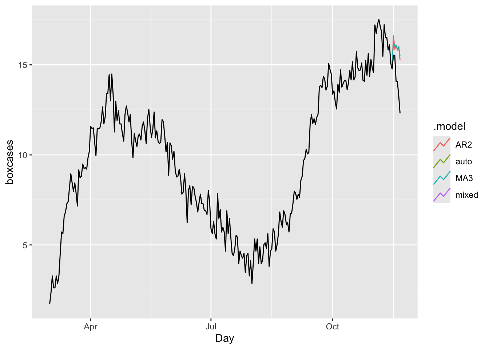
## # A tibble: 4 × 10
## .model .type ME RMSE MAE MPE MAPE MASE RMSSE ACF1
## <chr> <chr> <dbl> <dbl> <dbl> <dbl> <dbl> <dbl> <dbl> <dbl>
## 1 AR2 Test -1.57 1.88 1.57 -11.6 11.6 1.35 1.30 0.359
## 2 MA3 Test -1.61 1.91 1.61 -11.9 11.9 1.38 1.32 0.501
## 3 auto Test NaN NaN NaN NaN NaN NaN NaN NA
## 4 mixed Test NaN NaN NaN NaN NaN NaN NaN NAIn all measures, the model “auto” (ARIMA with the Hyndman-Khandakar algorithm) is better than others.
Finally, it is always good to check ARIMA (or any time series forecasting) against the base benchmark.
bfit <- train %>%
model(ave = MEAN(boxcases),
lm = TSLM(boxcases ~ trend() + season()))
bfc <- bfit %>% forecast(h = 7)
bfc %>%
autoplot(toronto, level = NULL)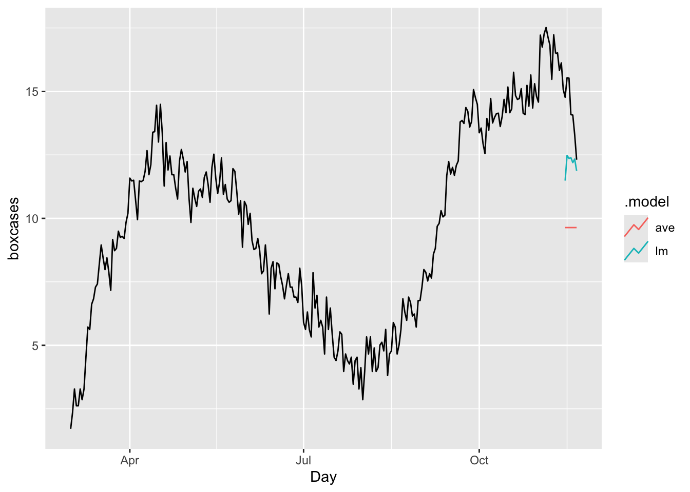
## # A tibble: 2 × 10
## .model .type ME RMSE MAE MPE MAPE MASE RMSSE ACF1
## <chr> <chr> <dbl> <dbl> <dbl> <dbl> <dbl> <dbl> <dbl> <dbl>
## 1 ave Test 4.59 4.72 4.59 31.8 31.8 3.94 3.26 0.507
## 2 lm Test 2.07 2.32 2.07 14.1 14.1 1.77 1.60 0.516The results shows our ARIMA model is doing much better job relative to a time-series linear model or a simple average.
As we discussed earlier in this book, there are basically two ways to select a best fitting predictive model: ex-post and ex-ante tools to penalize the overfitting. With AIC (Akaike Information Criterion) and BIC (Bayesian Information Criteria) measures, we can indirectly estimate the test (out-of-sample) error by making an adjustment to the training (in-sample) error to account for the bias due to overfitting. Therefore, these methods are ex-post tools to penalize the overfitting. The Hyndman-Khandakar algorithm uses this ex-post approach by selecting the best predictive ARIMA model with minimum AICc among alternatives.
We can directly estimate the test error (out-sample) and choose the model that minimizes it. Instead of selecting a model with AICc, we can do it by tuning the parameters of ARIMA with a cross-validation approach so that the tuned model achieves the highest predictive accuracy.
28.7 Grid search for ARIMA
In time series analysis, the ARIMA model is a widely used and flexible choice for forecasting. However, when dealing with seasonal data, a Seasonal ARIMA (SARIMA) model becomes particularly relevant, as it effectively captures seasonal patterns and periodic fluctuations.
To fine-tune the parameters of a Seasonal ARIMA model, a grid search technique offers a systematic way to explore a range of candidate models. This chapter focuses on implementing a grid search for a SARIMA model with \(d=1\), \(D=1\), and \(S=7\), ensuring that the selected model is well-suited to the data’s seasonal structure.
To minimize test error and improve model reliability, we employ a cross-validation approach that evaluates out-of-sample performance. Using a grid search, we systematically examine multiple SARIMA models, testing different parameter combinations to identify the one that best captures the underlying structure of the data. This method enhances forecast accuracy by preventing the selection of an overfitted or underperforming model.
To compare and assess model performance, we rely on two key metrics:
- Corrected Akaike Information Criterion (AICc): This metric provides a measure of model quality while adjusting for the number of parameters, helping to prevent overfitting. A lower AICc value indicates a better balance between model complexity and goodness-of-fit.
- Root Mean Squared Error (RMSE): RMSE quantifies the deviation between observed and predicted values, offering an intuitive measure of forecast accuracy. A lower RMSE suggests a model that produces more precise predictions.
By integrating grid search, cross-validation, and rigorous model evaluation, we ensure that the selected SARIMA model not only captures seasonal trends effectively but also delivers robust and reliable forecasts.
#In-sample grid-search
p <- 0:3
q <- 0:3
P <- 0:3
Q <- 0:2
comb <- as.matrix(expand.grid(p, q, P, Q))
# We remove the unstable grids
comb <- as.data.frame(comb[-1,])
ind <- which(comb$Var1 == 0 & comb$Var2 == 0, arr.ind = TRUE)
comb <- comb[-ind,]
row.names(comb) <- NULL
colnames(comb) <- c("p", "q", "P", "Q")
aicc <- c()
RMSE <- c()
for (k in 1:nrow(comb)) {
tryCatch({
fit <- toronto %>%
model(ARIMA(boxcases ~ 0 + pdq(comb[k, 1], 1, comb[k, 2])
+ PDQ(comb[k, 3], 1, comb[k, 4])))
wtf <- fit %>% glance
res <- fit %>% residuals()
aicc[k] <- wtf$AICc
RMSE[k] <- sqrt(mean((res$.resid) ^ 2))
}, error = function(e) {
})
}
cbind(comb[which.min(aicc), ], "AICc" = min(aicc, na.rm = TRUE))## p q P Q AICc
## 75 3 3 0 1 558.7746## p q P Q RMSE
## 120 3 3 3 1 0.6478857Although we initially set the ARIMA model without a constant, we can extend the grid search to include models with a constant term. Additionally, we can incorporate a Ljung-Box test (ljung_box) to assess the adequacy of each model’s residuals. By evaluating both criteria—minimizing the corrected Akaike Information Criterion (AICc) and passing the Ljung-Box test—we can refine our model selection process for improved accuracy.
However, a full grid search may not always be necessary. The Hyndman-Khandakar algorithm offers an efficient alternative for automatic ARIMA model selection, optimizing the model based on the minimum AICc. While this method does not perform a Ljung-Box test for each model, it effectively automates the selection process.
In practice, we can take a different approach: instead of checking for residual autocorrelation via the Ljung-Box test, we can implement a grid search with cross-validation, selecting the model that yields the minimum out-of-sample prediction error. This ensures that the chosen model generalizes well to new data, focusing on predictive accuracy rather than residual diagnostics.
Here is a simple example demonstrating how this selection process can be applied:
#In-sample grid-search
p <- 0:3
q <- 0:3
P <- 0:3
Q <- 0:2
comb <- as.matrix(expand.grid(p, q, P, Q))
# We remove the unstable grids
comb <- as.data.frame(comb[-1,])
ind <- which(comb$Var1 == 0 & comb$Var2 == 0, arr.ind = TRUE)
comb <- comb[-ind, ]
row.names(comb) <- NULL
colnames(comb) <- c("p", "q", "P", "Q")
train <- toronto %>%
filter_index( ~ "2020-11-14")
RMSE <- c()
for (k in 1:nrow(comb)) {
tryCatch({
amk <- train %>%
model(ARIMA(boxcases ~ 0 + pdq(comb[k, 1], 1, comb[k, 2])
+ PDQ(comb[k, 3], 1, comb[k, 4]))) %>%
forecast(h = 7) %>%
accuracy(toronto)
RMSE[k] <- amk$RMSE
}, error = function(e) {
})
}
cbind(comb[which.min(RMSE), ], "RMSE" = min(RMSE, na.rm = TRUE))## p q P Q RMSE
## 12 0 3 0 0 0.7937723g <- which.min(RMSE)
toronto %>%
model(ARIMA(boxcases ~ 0 + pdq(comb[g, 1], 1, comb[g, 2])
+ PDQ(comb[g, 3], 1, comb[g, 4]))) %>%
forecast(h = 7) %>%
autoplot(toronto, level = NULL)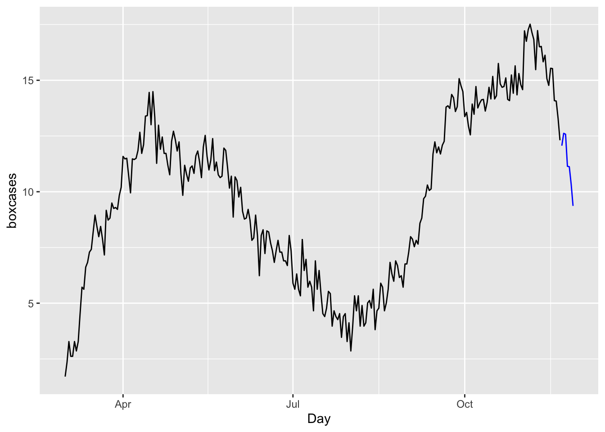
We will not apply h-step-ahead rolling-window cross-validations for ARIMA, which can be found in the post, Time series cross-validation using fable, by Hyndman (2021). However, when we have multiple competing models, we may not want to compare their predictive accuracy by looking at their error rates using only few out-of-sample observations. If we use rolling windows or continuously expanding windows, we can effectively create a large number of days tested within the data.